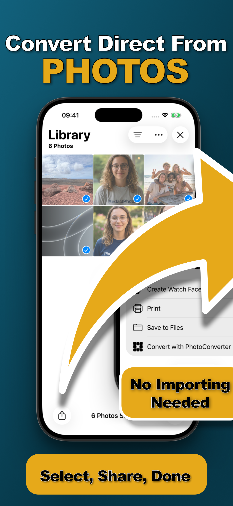

You tried to attach a photo to a form and it was rejected. Or you sent pictures to someone on Windows and they couldn't open a single one. The culprit is HEIC, the format your iPhone shoots by default, and the fix is a conversion to JPG, the format that opens everywhere.
Here's the fastest way to do it, plus why the popular workarounds cost you more than they seem to.
Why HEIC Needs Converting
Since iOS 11, iPhones save photos as HEIC: identical quality to JPEG at roughly half the file size. Great for your storage, terrible for compatibility. Windows PCs need paid codecs to open it, older Android devices refuse it, and countless web forms and portals simply reject it. Until the rest of the world catches up, HEIC photos regularly need to become JPGs.
The Usual Workarounds (and Their Catches)
- Free converter websites: they work by uploading your personal photos to someone else's server, with unknown retention and ad trackers along for the ride.
- The Files-app copy trick: copying photos into a Files folder converts them as a side effect, but gives you no control over quality, naming, or size, and fails silently on some photos.
- Emailing yourself: slow, manual, and often recompresses your photos on the way through.
Convert HEIC to JPG with Photo Converter (Step by Step)
- Select the HEIC photos in PhotosOpen the Photos app and select every photo you need as JPG, one or dozens, it's one pass either way.
- Tap Share → “Convert with PhotoConverter”The action extension opens right inside the share sheet. No app switching, no importing.
- Choose JPEG as the output formatKeep the original size and maximum quality for a visually identical copy, or resize while you're at it.
- Convert and save back to your libraryTap Convert. The JPGs are processed on-device in seconds and saved straight back to Photos, ready to send anywhere.

Converting a Lot of Photos?
The extension is built for batches, select fifty vacation photos and convert them all in one tap with the same settings. See batch converting photos on iPhone for the details.
Will Converting Reduce Quality?
Not unless you choose to. At original dimensions and maximum quality, the JPG is visually indistinguishable from the HEIC. The quality slider exists for the opposite case, when you want a smaller file to fit an upload limit.
Try it on your own photos
Photo Converter is free to download with a 3-day free trial, convert your first batch in the next two minutes, without anything leaving your phone.
Get Photo Converter on the App Store